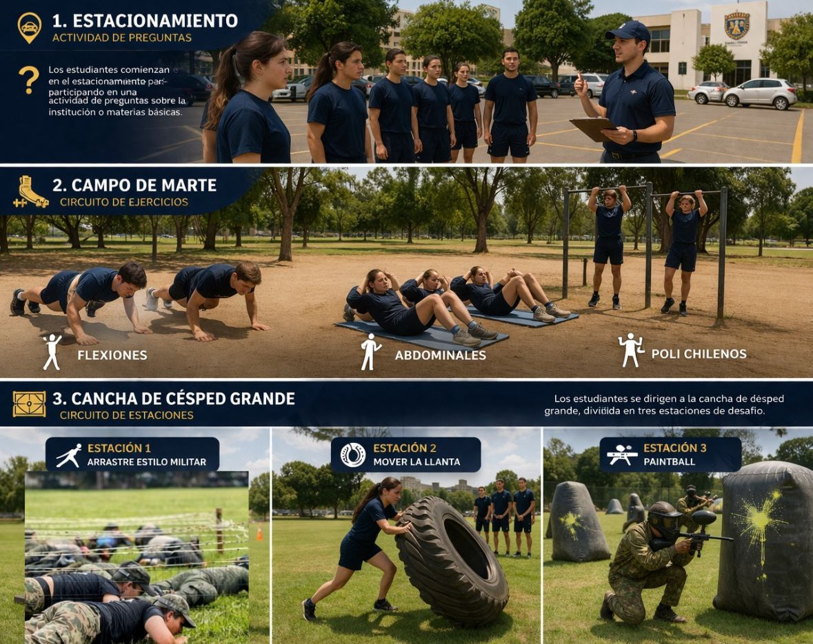
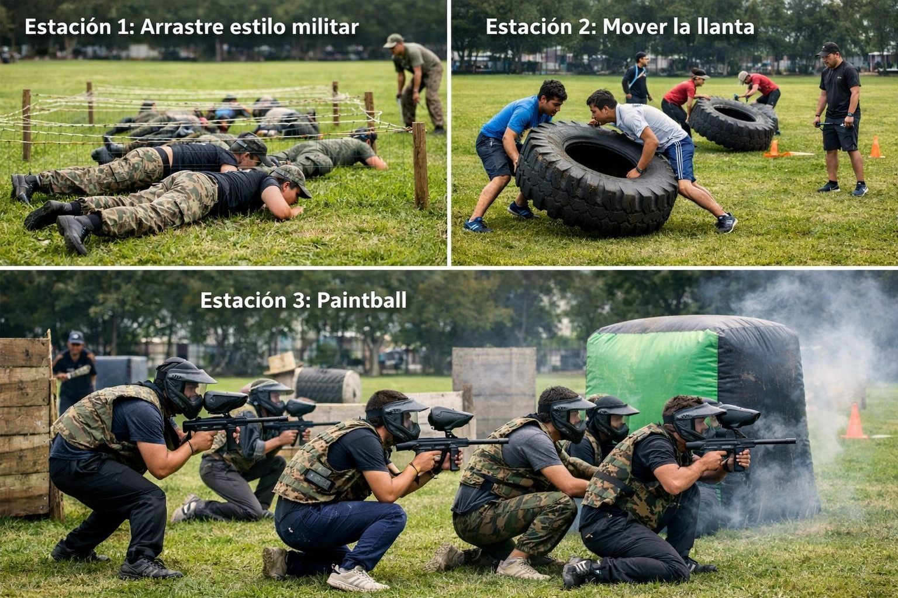

Bienvenido a la WebApp oficial del Circuito Físico-Atlético del COMIL 12. Esta plataforma integra tecnología y deporte para optimizar tu entrenamiento. Escanea los códigos QR en cada estación para instrucciones técnicas detalladas. KDT Godoy Nataly KDT Paca Maykel KDT Aguilera Valentina KDT Cajas Julia KDT Valladolid Damián
Ver el Mapa del Circuito
Mide tus tiempos en cada vuelta o estación para llevar tu registro personal.
Abrir CronómetroIntroduce tu tiempo total y obtén tu clasificación (Recluta, Combatiente, Élite).
Calcular PuntuaciónEscanea directamente desde la WebApp para ver los videos técnicos de la estación.
Escanear Estación